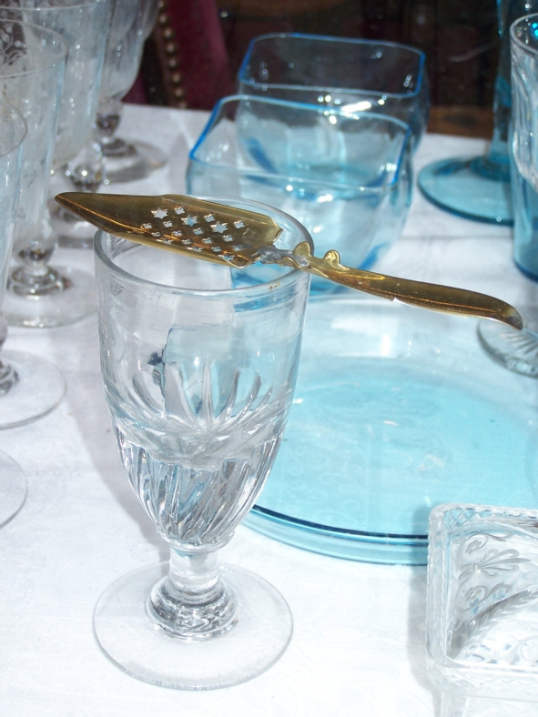

О культуре пития .. Как пить абсент.


Все методы сводятся к уменьшению горьковатого привкуса и высокой крепости. Также упор делается на зрелищность самого процесса – подача должна быть красивой. Выбор стопок и бокалов зависит от способа употребления, в некоторых случаях требуются специфические принадлежности.
Абсент можно пить следующими методами:
1. Классический (французский). Сверху на бокале с абсентом размещают специальную ложечку с дырочками, на которую кладут кусочек сахара. Перед употреблением на сахар льют ледяную воду, пока напиток в бокале не помутнеет (французы называют этот эффект Louche). Вода заставляет выпадать в осадок эфирные масла, содержащиеся в спирте. Также считается, что сладкая вода усиливает воздействие туйона, но научно эта гипотеза не доказана. Воду с абсентом разбавляют в пропорции 5:1 (пять частей воды и одна часть абсента).

Ложка для абсента
2. Неразбавленным (в чистом виде). Абсент представляет собой классический аперитив, который можно пить в чистом виде из узеньких рюмок. Перед употреблением напиток охлаждают почти до нулевой температуры, затем выпивают содержимое рюмки залпом. Рекомендуемая разовая доза не должна превышать 30 мл.
3. Чешский (огненный) метод. Стакан на четверть наполняют абсентом. Далее смачивают в абсенте кусочек сахара и кладут рафинад на специальную ложечку (как и в первом способе). Затем сахар поджигают, давая ему гореть примерно 60 секунд. Сахар плавится, горячие капли попадают на дно стакана. Когда пламя гаснет, ложечку с остатками сахара помещают в стакан и размешивают содержимое. Далее по вкусу добавляют ледяную воду, которая смягчает вкус полученного напитка.
4. Абсент с сиропом (русский метод). Сначала готовится сахарный сироп (сахар разбавляют водой в пропорции 1:2), затем сироп вливают в бокал с абсентом и перемешивают. Так привыкли пить абсент многие русские. Просто и быстро.
5. Метод «Два стакана». Маленькую рюмку наполняют абсентом и ставят в большой стакан. После этого в рюмку медленно наливают воду. Жидкости постепенно смешиваются, переливаясь в большой стакан. Напиток считается готовым, когда в рюмке остается только вода. Для большего удобства разбавленный водой абсент переливают в чистый стакан.
6. С другими напитками. Чтобы уменьшить крепость и горечь абсента, его можно разбавить колой, апельсиновым, ананасовым, лимонным соком, тоником, лимонадом, «Спрайтом» или другими напитками. Пропорции зависят от индивидуальных предпочтений.
7. В стиле самбуки. Понадобятся два бокала, салфетка, трубочка для коктейлей и зажигалка. В первый бокал наливают 50 мл абсента, в центре салфетки делают отверстие, в которое вставляют трубочку коротким концом, салфетку с трубочкой кладут на блюдце. Поджигают абсент, дают ему погореть 5—10 секунд, затем переливают горящий абсент во второй бокал, а первым накрывают сверху. Когда пламя погаснет, переносят верхний (первый) бокал на салфетку. Залпом выпивают абсент, потом вдыхают пары из первого бокала через трубочку.